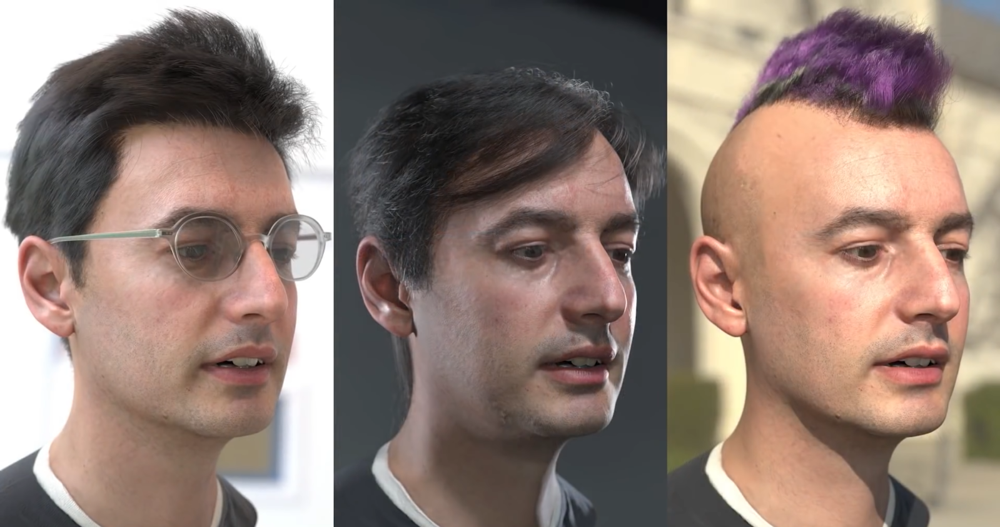

Meta
Recentemente, o fundador do Facebook, Mark Zuckerberg, decidiu investir em tecnologia em realidade virtual e em realidade aumentada, as fronteiras da interação das pessoas por meio da internet. Por isso, o grupo de Zuckerberg irá passar a se chamar META
A palavra Meta vem do grego metá, que pode ser traduzida como "além de" ou "em seguida". Essa mudança do nome da marca se deve a uma referência ao metaverso, o mundo dos espaços virtuais e avatares.
Para Zuckerberg, esse é o "próximo passo da tecnologia” e o ser humano inevitavelmente irá passar a procurar meios de torná-la realidade.
Realidade Virtual e Realidade Aumentada
Para criar o chamado “Metaverso” será necessário antes de tudo o aperfeiçoamento nas tecnologias de Realidade Virtual e Realidade Aumentada, pois é através delas que se dará a interação com esse mundo virtual. Embora semelhantes, existem diferenças entre essas duas tecnologias.
Na realidade virtual, nós somos “transportados” para um mundo virtual através do óculos de realidade virtual. Continuamos no meio físico, mas através do óculos somos capazes de ver e interagir com ambientes e objetos virtuais. Por meio de controles é possível segurar, empurrar e lançar uma bola, por exemplo.
Já a realidade aumentada objetos virtuais são transportados para o nosso mundo físico, esses objetos são visíveis através de telas com dispositivos que possuam câmera, basta apontar a câmera do celular ao local onde o objeto virtual esteja localizado e será possível sua visualização.
Metaverso
O termo “metaverso” originalmente surgiu no livro Snow Crash, de Neal Stephenson, publicado em 1992. Nele, as pessoas usam o metaverso para escapar de uma realidade distópica.
Mark não quer que a Meta seja somente um grupo de redes sociais e de aplicativos, mas uma empresa voltada para a interação de pessoas numa espécie de um grande videogame 3D, algo similar como o jogo OASIS do livro, e também do filme, Jogador N°1. Ele inclusive já declarou: “No momento, nossa marca está intimamente ligada a um produto só. Mas, com o tempo, esperamos ser vistos como uma empresa do metaverso.”
Ele também disse: "você será capaz de fazer quase tudo que você possa imaginar — reunir-se com amigos e família, trabalhar, aprender, brincar, fazer compras, criar —, bem como experiências completamente novas que realmente não se encaixam na forma como pensamos sobre computadores ou telefones hoje."
O Facebook afirmou que o Metaverso anunciado ainda está em estágio de desenvolvimento e não informou quando os recursos e produtos
desse novo ambiente estarão disponíveis. Mesmo ainda pouco distante, o Metaverso em partes, já está começando a ganhar vida. Quanto
tempo isso vai demorar para chegar só vai depender dos avanços tecnológicos, dos desenvolvedores e da aceitação do público.
Um dos primeiros projetos do Metaverso foi a criação do Horizon Workrooms, que é um software que simula uma sala de reunião com recursos para tornar esse ambiente mais realista, como áudio espacial que varia o volume do áudio dos presentes baseado na sua posição e distância. Também é possível compartilhar a tela do computador, imagens, vídeos, documentos e participar da reunião por meio de uma janela comum.
Acessibilidade
O acesso a esses ambientes se dará exclusivamente através de dispositivos, dispositivos estes que atualmente são caros e inacessíveis à grande parte da população, o Óculos Quest 2 da própria Meta está em torno de R $2.800,00 à R $4.100,00. Sem contar na produção que é limitada e já que a ideia é tornar o metaverso uma rede social é preciso o maior número de usuários possível.
Quando partimos apenas para realidade aumentada, já temos uma gama maior de possíveis usuários, pois grande parte das pessoas possuem um aparelho smartphone. Embora também não seja qualquer smartphone que possua hardware bom o suficiente para entregar uma experiência minimamente satisfatória.
Avatar
No Metaverso todo usuário terá o seu avatar que pode ser gerado através de um escaneamento do rosto ou criado do zero por ferramentas de personalização. Vale a pena ressaltar que mesmo o rosto escaneado pode ser personalizado. Durante a apresentação de Zuckerberg usaram o avatar de um funcionário que é careca e aplicaram em seu avatar diversos cortes de cabelo.
Com isso temos um pequeno modo de monetização que com certeza haverá dentro desse mundo. Algo muito semelhante ao que temos hoje com microtransações em jogos, que vendem roupas para personalização de personagens e skins de armas.
Privacidade
om o surgimento do Metaverso, cria-se também novas necessidades, mas também novas preocupações e a principal delas é referente à privacidade. Com o surgimento das criptomoedas, em específico o Bitcoin surgiu uma tecnologia muito famosa nos dias atuais baseada em criptografia denominada BlockChain, será essa tecnologia que assegurará a segurança e a privacidade de seus usuários, porque ela garante que através de uma cadeia de blocos interligadas de algoritmos criptográficos as transações e as localizações serão mantidas intactas e imperceptíveis dentro de um ecossistema descentralizado.
Uma grande preocupação é de como os dados do usuário serão utilizados lembrando que Mark Zuckerberg em 2018 teve que depor por mais de 5 horas em uma audiência no senado norte americano e teve que explicar como a empresa Cambridge Analytics teve acesso aos dados de aproximadamente 87 milhões de usuários e fizeram uso desses dados para manipular o resultado de eleições de diversos países. Durante a apresentação de Zuckerberg sobre o metaverso pouco foi falado sobre privacidade, mas ele afirmou que tudo que seria feito com os dados dos usuários seria o mais transparente possível. Não será surpresa se Zuckerberg for chamado novamente para depor e explicar o que ele está querendo fazer com esse novo projeto.